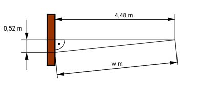

Pythagoras Aufgabe 13 Bei einem Wettkampf springt ein Mädchen 0,52 m neben der Mitte des Weitsprungbalkens schräg ab. Es wird von der Mitte des Balkens aus eine senkrechte Weite von 4,48 m gemessen. Wie groß war die Sprungweite w des Mädchens in m tatsächlich?  w² = 0,52² m² + 4,48² m² = 20,34 m² |√ w = = 4,5 m